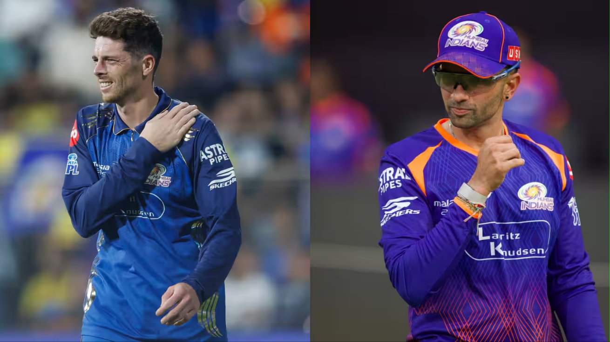

MI All-Rounder Mitchell Santner Ruled Out of IPL 2026, Keshav Maharaj Named Replacement

Published: April 2026
The Indian Premier League (IPL) 2026 season has taken another unexpected turn as Mitchell Santner, the dependable all-rounder for Mumbai Indians, has been ruled out of the tournament due to injury.
Mitchell Santner suffered a shoulder injury while attempting a catch near the boundary during Mumbai Indians' match against Chennai Super Kings. He dived to stop a potential boundary but landed awkwardly on his shoulder, and the injury is serious enough to require extended rest and rehabilitation, ruling him out for the remainder of the tournament.
In a quick response, Mumbai Indians have signed South African spinner Keshav Maharaj as his replacement.
Santner’s Exit – A Big Blow for MI
Mitchell Santner has been a crucial player for Mumbai Indians with his ability to contribute both with the ball and bat. His left-arm spin often controlled the middle overs, while his calm batting added depth to the lineup.
His absence due to injury could significantly impact the team's balance, especially in tight match situations where his all-round abilities proved valuable.
Keshav Maharaj Joins the Squad
Keshav Maharaj brings valuable international experience and is known for his disciplined bowling attack. While he may not offer the same batting strength as Santner, his bowling consistency makes him a strong addition.
- Experienced left-arm spinner
- Strong control in middle overs
- Calm under pressure
Impact on Mumbai Indians
This replacement could slightly change Mumbai Indians' strategy:
- Stronger spin bowling attack
- Reduced all-round depth
- More responsibility on other all-rounders
Conclusion
While losing Mitchell Santner to injury is a setback, Mumbai Indians have made a smart move by bringing in Keshav Maharaj. Fans will be eager to see how Maharaj performs in the IPL environment.